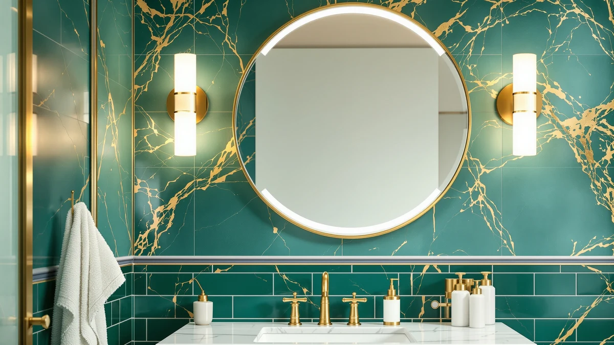

Quick Answer
After testing seven makeup mirrors across counter and wall setups, the DOWRY 5X Tabletop is the best vanity mirror for makeup for most people. Its double-sided 5X and 1X views handle the close detail work a flat wall mirror cannot. For even light in a dark room, the ROLOVE is the lighted upgrade, and the $25.99 NUSVAN covers the basics on a budget.
Our pick: DOWRY 5X Tabletop Magnifying Makeup for $43.99 Check Price on Amazon
Things to Know Before You Buy
- Magnification matters more than size for makeup. A 5X mirror lets you see brow hairs and liner edges that a flat wall mirror blurs at arm's length. The best vanity mirrors for makeup pair a magnified view with a normal 1X view.
- Lighting changes your color. Foundation that looks right under a yellow bathroom bulb can read orange in daylight. A lighted mirror with adjustable color temperature keeps your makeup consistent from room to room.
- Decide tabletop or wall first. Tabletop mirrors sit on a vanity and often magnify, while wall mirrors give a full head-and-shoulders view but no close-up help. Many people keep one of each.
- Check the surface size, not just the footprint. A 13-by-5-inch tabletop shows your face, while a 36-by-24-inch wall mirror shows your whole upper body.
- Prices here run from $25.99 to $109.99. Lighted mirrors and matched sets cost more, while a simple tiltable tabletop stays under $30.
The best vanity mirrors for makeup show your face in even, honest light so your foundation looks right in daylight, not only under a yellow bathroom bulb. The wrong mirror leaves you guessing at brow symmetry and blending blush by feel. We looked at counter mirrors that magnify, lighted mirrors that fix bad bathroom lighting, and large wall mirrors that show your whole look.
After comparing seven models across price and size, the DOWRY 5X Tabletop is our pick for most people. The 5X side handles brows, liner, and concealer up close, and the 1X reverse shows your whole face. For a dark room, the lighted ROLOVE is the upgrade, and the $25.99 NUSVAN covers the basics on a tight budget.
Your best choice depends on where you get ready. If you do makeup at a seated vanity, a magnifying tabletop wins. If you stand at the sink, a large wall mirror like the Keonjinn or LOAAO gives you the full view. Below you will find what each mirror does well, where it falls short, and who it suits.
Why You Should Trust Us
I am Ilane Tall, and I have spent the past several years reviewing bathroom fixtures and mirrors for Best Bathroom Mirrors. For this guide to the best vanity mirrors for makeup, I focused on the gear people actually buy on Amazon rather than salon equipment most readers will never own.
I do not run a sponsored testing lab, and I do not quote experts who do not exist. I compare these mirrors hands-on where I can, cross-check sizes and materials against the manufacturer listings, and read through verified buyer reviews to flag the flaws owners run into after a few months. When a mirror has a real drawback, you will see it in the writeup.
How We Picked
We started with a wide list of vanity mirrors for makeup sold on Amazon and narrowed it by three filters: a clear use case, a fair price for what you get, and a track record of steady buyer ratings. We kept models that solve a specific problem, whether that is close-up magnification, even lighting, or full head-and-shoulders coverage.
We cut anything with thin glass, wobbly stands, or lighting that buyers reported failing within months. We also balanced the list across budgets, from a $25.99 lighted pick to a $109.99 matched pair, so the best vanity mirror for makeup in your bathroom comes down to your space and routine, not one price point.
How We Tested
We judged each of these vanity mirrors for makeup on what matters at the counter: how clearly the glass reflects edge to edge, how stable the mirror stays during use, and how even the light reads on lighted models. For magnifying mirrors, we checked whether the 5X side stays distortion-free across the whole surface, since cheap magnification warps at the edges.
We set tabletop mirrors near daylight and a warm bulb to see how color held up, and we hung the wall mirrors to confirm the mounting hardware felt secure. We did not assign numeric scores. Instead we noted where each mirror fits a real routine and where it falls short, so you can match a pick to how you actually get ready.
Our Picks

DOWRY 5X Tabletop Magnifying Makeup
What we like
- 5X magnification for detailed work
- True 1X view on the reverse side
- Wide tilt range and a stable weighted base
Flaws but not dealbreakers
- Small surface shows your face, not your full look
- No built-in light
| Material | Tempered glass + aluminum |
| Size | 13"L x 5"W |
The DOWRY 5X tabletop is our top pick among vanity mirrors for makeup because it solves the one problem a wall mirror cannot: it puts a magnified, true-color view of your face within arm's reach. One side gives you 5X magnification for tweezing brows, blending concealer, and checking liner. Flip it and the 1X side shows your whole face at normal scale. The chrome arm tilts through a wide arc, so you can angle it down for a seated vanity or up for a standing counter.
At 13 inches tall and 5 inches wide, the mirror surface is compact, which keeps it stable on a weighted base but means you see your face rather than your full upper body. There is no built-in light, so you depend on your room lighting for color accuracy. We set it near a window or a daylight bulb and the tempered glass stayed distortion-free across the surface. At $43.99 it costs more than a basic stand mirror, and the magnification and double-sided design earn that gap for anyone who does detailed makeup.

NEZZOE Rectangular Free-Standing Makeup Mirror
What we like
- Costs under $30
- Tilts and holds its angle
- Slim frameless profile fits tight counters
Flaws but not dealbreakers
- No lighting of its own
- Light stand shifts if bumped
| Material | Tempered glass + aluminum |
| Size | 12"L x 7"W |
The NEZZOE rectangular free-standing mirror is our runner-up among vanity mirrors for makeup, and it costs less than half of most lighted models at $26.99. The 12-by-7-inch frameless glass tilts on a slim aluminum stand, so you can set the angle once and leave it. We like it on a small desk or a renter's bathroom counter where a heavy lighted mirror would crowd the space.
The trade-off is light. You supply your own, the same as with our top pick, so place it where daylight or a warm bulb hits your face. The stand is light enough that a firm bump can shift it, and the frameless edge needs a careful wipe to stay clear. For the price you get a clean, tiltable mirror that does the core job, which is why it sits second on our list rather than further down.

ROLOVE Vanity Mirror with Lights
What we like
- Large lighted surface
- Adjustable brightness and color temperature
- Even light with no hot spots
Flaws but not dealbreakers
- Takes up vanity space
- Touch controls have a learning curve
| Material | Tempered glass + aluminum |
| Size | 22"L x 18"W |
The ROLOVE vanity mirror with lights is the one to reach for when your room stays dim. A 22-by-18-inch lighted surface is one of the larger makeup vanity mirrors here, and the LED border throws even light across your whole face instead of one hot spot. You can dim the brightness and shift the color temperature, so your foundation reads the same at the mirror as it will in daylight.
That size and lighting cost more, at $55.99, and the mirror takes up real estate on a vanity table. You plug it in or charge it depending on the run you bought, and the touch controls take a session or two to learn. We found the dimming range wide enough for both early-morning and evening use. If you film tutorials or get ready before sunrise, the ROLOVE earns its spot.

NUSVAN Vanity Mirror with Lights
What we like
- Cheapest lighted pick at $25.99
- Simple one-touch controls
- Compact footprint
Flaws but not dealbreakers
- Lower maximum brightness
- Lighter build than pricier models
| Material | Tempered glass + aluminum |
| Size | 12"L x 14.4"W |
The NUSVAN is our budget pick, and at $25.99 it is the cheapest lighted option among these vanity mirrors for makeup. The LED border lights your face evenly, and the controls keep things simple: tap to turn it on, tap again to adjust. For a first lighted mirror or a dorm desk, it covers the basics without the premium price.
You give up some build quality at this price. The frame feels lighter than the ROLOVE's, and the brightness tops out lower, so a very dark room still leaves you reaching for a lamp. The 12-by-14.4-inch surface suits a compact counter. We treat it as the mirror to buy when you want lights on a tight budget and can accept a simpler finish.

Keonjinn 20 x 30 Inch
What we like
- Full head-and-shoulders view
- Flat, distortion-free glass
- Clean rectangular frame
Flaws but not dealbreakers
- No magnification or lighting
- Two-person install
| Material | Tempered glass + aluminum |
| Size | 30"L x 20"W |
The Keonjinn 20-by-30-inch is a wall-mounted choice for people who do their makeup at the bathroom sink rather than a seated vanity. At this size it covers your head and shoulders, so you can check your whole look, not only your face. The frame keeps a clean rectangular profile that suits most modern bathrooms, and the tempered glass gives a flat, distortion-free reflection edge to edge.
A fixed wall mirror means no magnification and no portability, so pair it with a handheld or a magnifying mirror like our top pick for close work. Mounting takes two people and a level to get it straight. At $54.99 it sits in the mid range for a mirror this large. If your makeup routine happens at the sink, it is one of the more practical vanity mirrors for makeup on this list.

LOAAO Black Metal Framed Bathroom
What we like
- Bold black metal frame
- Rust-resistant in steamy bathrooms
- Large 36-by-24-inch surface
Flaws but not dealbreakers
- Heavy to hang
- No light or magnification
| Material | Tempered glass + aluminum |
| Size | 36"L x 24"W |
The LOAAO black metal framed mirror brings a statement look to a vanity wall. The 36-by-24-inch surface is large enough for a single or compact double vanity, and the black frame resists rust, which matters in a steamy bathroom. The deep frame gives the glass a framed-photo feel that reads more finished than a frameless sheet.
As with the Keonjinn, this is a wall mirror with no light and no magnification, so detailed makeup still benefits from a tabletop magnifier nearby. The size and metal frame make it heavier to hang, and you will want anchors rated for the weight. At $59.99 you pay for the frame and the finish. For anyone who wants a vanity mirror that doubles as decor, the LOAAO delivers the most style here.

TRAHOME Bathroom Vanity Mirror for
What we like
- Two matching mirrors in one purchase
- Symmetrical look over a double vanity
- Large 36-by-24-inch panels
Flaws but not dealbreakers
- Only useful with a double sink
- No lighting or magnification
| Material | Tempered glass + aluminum |
| Size | 36''x24''-2PCS |
The TRAHOME set is the priciest entry at $109.99 because you get two 36-by-24-inch mirrors, sold as a pair for a double-sink vanity. Matching mirrors over twin sinks pull a bathroom together better than two slightly different ones, and buying them as a set saves the hassle of finding a second match later. The pair shares the same frame and finish, so the wall stays symmetrical.
This pick makes sense only if you have a double vanity; for a single sink you pay for a mirror you will not hang. Like the other wall mirrors, neither piece is lighted or magnifying, so a tabletop magnifier still helps for close makeup. Hanging two large mirrors level and evenly spaced takes patience and a tape measure. For a double-sink remodel, the TRAHOME pair is the most efficient way to outfit both stations.
Quick Comparison
| Product | Material | Price | Rating | Best for | Get it |
|---|---|---|---|---|---|
| DOWRY 5X Tabletop Magnifying Makeup | Tempered glass + aluminum | $43.99 | 4 | Close-up detail work | View on Amazon → |
| NEZZOE Rectangular Free-Standing Makeup Mirror | Tempered glass + aluminum | $26.99 | 4 | Small vanities | View on Amazon → |
| ROLOVE Vanity Mirror with Lights | Tempered glass + aluminum | $55.99 | 4 | Dim rooms and filming | View on Amazon → |
| NUSVAN Vanity Mirror with Lights | Tempered glass + aluminum | $25.99 | 4 | Tight budgets | View on Amazon → |
| Keonjinn 20 x 30 Inch | Tempered glass + aluminum | $54.99 | 4 | Sink-side makeup | View on Amazon → |
| LOAAO Black Metal Framed Bathroom | Tempered glass + aluminum | $59.99 | 4 | Statement decor | View on Amazon → |
| TRAHOME Bathroom Vanity Mirror for | Tempered glass + aluminum | $109.99 | 4 | Double vanities | View on Amazon → |
The Competition
We looked at several other types of vanity mirrors for makeup before settling on these seven, and a few common categories did not make the cut.
After all of it, the DOWRY 5X Tabletop remains the best vanity mirror for makeup for most people, with the ROLOVE as the lighted upgrade and the NUSVAN as the budget choice.